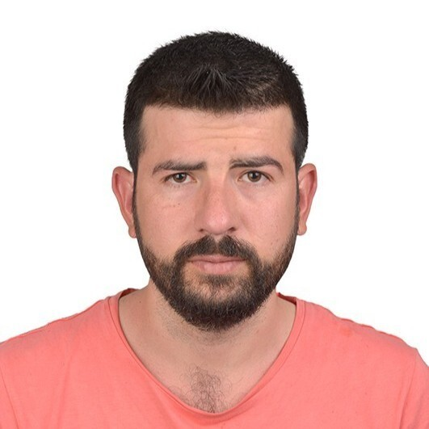

Ali Guzel

Summary
Experienced Embedded Systems Engineer with extensive knowledge in embedded
systems development, firmware, and device driver development for embedded
products. Skilled in testing, verification, and validation, with a strong
background in designing, implementing, and debugging embedded software for
ARM and TI processors using C and C++. Proficient in developing and
debugging C/C++ code, as well as RTOS libraries for embedded C/C++.
Possesses 6 years of experience in C/C++ programming and 4 years of
experience in Python, particularly for test automation.
Education
-
Bachelor Degree: Electrical Electronics Engineering-University of
Akdeniz (2020-06 )
Work Experience
-
Senior Embedded Software Engineer-Magma Automaten GmbH
May 2024(Current)
-
Designed and implemented an interactive user interface (UI) for a
vending machine product page.
-
Optimized the UI for Linux touch-screen tablets, ensuring smooth and
responsive touch interactions.
-
Established real-time communication between the vending machine and
frontend through WebSocket technology, facilitating real-time
inventory updates, order processing, and status feedback.
-
Integrated embedded software on the vending machine side for secure
WebSocket data handling.
-
Created a user-friendly, robust, and responsive UI that enhanced the
vending machine’s usability.
-
Improved communication reliability and minimized latency in data
exchange with real-time WebSocket connections.
-
Senior Embedded Software Engineering-Magma Vend
Jun 2020-May 2024
-
Streamlined code development by creating modular programming
structures and reusable code libraries.
- Served as team leader in all projects.
-
Mentored junior engineers, sharing knowledge in embedded system
design principles and practices to foster team growth.
-
Validated schematic designs working alongside hardware engineers.
-
Developed embedded software for mainboard, cooler card, and shelf
card connections for vending machines.
-
Authored code fixes and enhancements for inclusion in future code
releases and patches.
- Writing a GUI application in Python to load .bin codes
- Built databases and table structures for web applications.
-
Coded the ESP32-WROOM-32D device using C++ to save automata data.
-
Developed driver files in C++ for the mainboard, cooler board, shelf
board, and assorted system board.
-
Implemented control for 24 DC motors using PWM techniques to ensure
precise speed and direction control.
-
Gained experience with low-level drivers (UART, Flash, USB, I2C,
SPI, etc.) and wireless chipsets (WiFi, Bluetooth, LTE), including
simultaneous use of RS-232 and RS-485 protocols.
-
Specialized in all phases of the product lifecycle, including BSP
development, OTA programming, secure boot, and encryption.
-
Experienced in hardware and firmware debugging using tools such as
JTAG, SWD, oscilloscopes, and logic analyzers.
-
Familiar with build automation tools (GNU Make, CMake) and robust
development workflows (Agile, JIRA, version control).
-
Developed touchscreen application software for vending machines
using Flutter, enabling Linux-based operations on tablets.
-
Experienced in formal software behavior specification approaches,
including UML, Object-Oriented design, State Machines, Data Flow
Diagrams, and Flow-Charts.
-
Strong problem-solving skills with the ability to resolve complex
software issues effectively.
-
Microcontroller (MCU) experience with STM32, nRF, ESP32, and TI
platforms.
-
Embedded Software Developer-Cw Energy
Jun 2018-August 2019
-
Enhanced system performance by optimizing embedded software code for
microcontrollers and processors.
-
Successfully tested newly developed features on both hardware
simulators and actual devices, ensuring compatibility across various
platforms.
-
Utilized version control systems such as Git to effectively manage
code changes and maintain a clean, organized codebase.
-
Improved the software and hardware functionalities of the MPPT
(Maximum Power Point Tracking) inverter device.
-
Developed C++ driver classes for the MPPT inverter, facilitating
improved device performance and functionality.
-
Contributed to software testing processes, reducing error rates by
20% through rigorous testing and validation.
-
Collaborated with hardware engineers to streamline product
development and documentation, enhancing team communication and
efficiency.
-
Worked within an Agile development framework to manage project
timelines and deliverables.
Skills
-
Programming: C, C++ (11/14/17/20),
Python,HTML,CSS,JavaScript,WebSocket,Embedded Linux
-
Platforms & Tools: : ARM Cortex-M, STM32, ESP32, nRF,
TI, GDB, JTAG, SWD, GNU Make, CMake, Keil, STM32CubeIDE,
CCSTUDIO,Vs-Code
-
Development Methodologies: Agile (Scrum), CI/CD,
Version Control (Git, SVN)
-
Communication Protocols: UART, SPI, I2C, CAN, RS-232,
RS-485, WiFi, BLE, MDB
-
Real-Time Systems: RTOS experience, Multithreading
programming, Low-level device drivers
-
C++ Features: : STL algorithms, containers, smart
pointers, lambda expressions, multithreading, constexpr, RAII, move
semantics
Awards and Certifications
- Supervised team of [12] staff members.
-
The best MDB (Multi-Drop Bus ) software specialist award was given by
the company.
- The team was appointed as team leader
Languages
- English: ⭐️⭐️⭐️⭐️⭐️
- Spanish: ⭐️⭐️⭐️
Other
Contact Me